附录1 常用操作
1. 人员选择
在本系统中，所有用到人员选择的模块使用的都是此对话框：
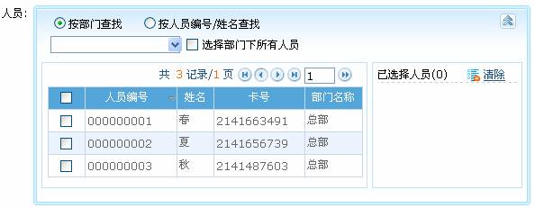
可以通过两种方式来查找人员：
（1）、按部门查找：在下拉菜单的部门列表中部门前面有一个复选框，选中之后，则选中该部门的所有人员，如果勾选【选择部门下所有人员】，则该部门的所有人员将全部选中，并显示在已选择人员列表框中。
（2）、按人员编号/姓名查找：在查询框中输入要选择人员的姓名或者人员编号，单击查询图标，将符合条件的人员显示人员列表框中。单击人员前面的选择框，打勾选中人员，并显示在已选择人员框中。
当人员选择到已选择人员框中，如果需要单独删除某一个或几个人时，只需要将该人员前面的勾选去掉即可。若需撤消所有人员重新选择，单击【清除】按钮即可。
2. 选择日期
（以新增人员离职页面的设置“离职日期”为例），单击离职日期后的输入框，系统自动弹出日期选择框，如下图所示：
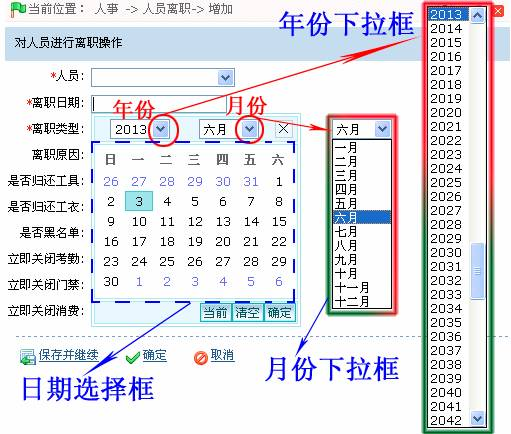
（1）、单击年份后的按钮，在弹出的“年份下拉框”中选择年份（系统默认显示当前日期的年份）。
（2）、单击月份后的 按钮，在弹出的“月份下拉框”中选择月份（系统默认显示当前日期的月份。
按钮，在弹出的“月份下拉框”中选择月份（系统默认显示当前日期的月份。
（3）、在（日期选择框内）单击所要选的日期，即可选择该日期。
（4）、选择后的日期会显示在离职日期后，如下图所示：
当前：单击【当前】按钮，这将日期设置为当前日期。
清空：若需重新选择日期，可单击【清空】按钮，清空已选择的日期。
3. 选择时间
（以新增时段页面的设置“开始签到时间”为例）
（1）、单击开始签到时间后的设置框，弹出如下图所示的时间设置框：
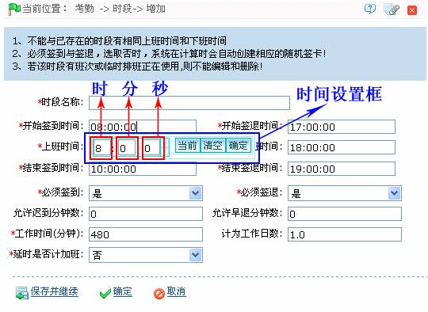
（2）、单击“时”框，将弹出对应的“时”选择框，如下图所示：
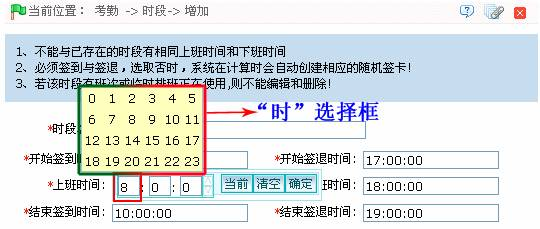
单击“时”选择框中的时间选择“时”。（备注：可在“时”框内手动输入“时”。）
（3）、单击“分”框，将弹出对应的“分”选择框，如下图所示：

单击“分”选择框中的数字选择“分”。（备注：可在“分”框内手动输入“分”。）
（4）、单击“秒”框，将弹出对应的“秒”选择框，如下图所示：
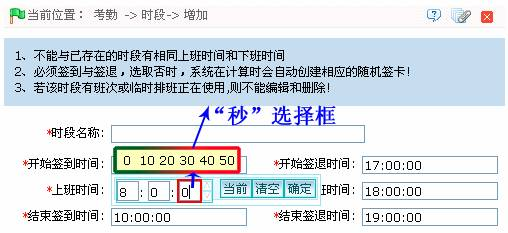
单击“秒”选择框中的数字选择“秒”。（备注：可在“秒”框内手动输入“秒”。）
（5）、设置完“时”、“分”、“秒”后，单击【确定】按钮保存即可。
当前：单击【当前】按钮，可设置时间为当前时间。
清空：若需重新选择时间，可单击【清空】按钮，清空已选择的时间。
4. 导入
如果已经有电子版的人事或部门档案，可能是其他软件或设备的人事、部门或者人力资源系统信息，这种情况下就可以通过【导入】功能将其导入到本系统中。
（1）、单击【人事】 【人员】
【人员】 【导入】，进入导入人员页面：
【导入】，进入导入人员页面：
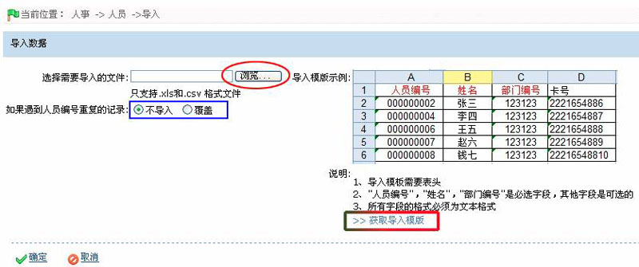
 备注：用户可单击【获取导入模板】按钮，弹出如下图所示的人员导入模板下载提示框：
备注：用户可单击【获取导入模板】按钮，弹出如下图所示的人员导入模板下载提示框：
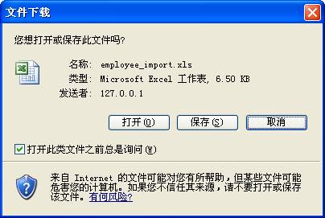
用户可保存该人员导入模板，并在此模板内填入对应的人员信息（并保存）。然后使用人员能导入功能将该文件（Excel文件）中的人员信息导入到本系统中。
（2）、单击【浏览】按钮，在弹出如下图所示选择文件窗口：

（3）、选择需导入的文件，并单击【打开】按钮；或直接双击文件，完成选择文件操作，此时“选择需要导入的文件”框中将显示该文件的地址，如下图所示：
 注意：系统只支持导入.xls和.csv格式的文件。
注意：系统只支持导入.xls和.csv格式的文件。
（4）、设置如遇到人员编号重复的记录：选择为不导入或覆盖；选择为不导入时，不导入文件中与系统人员编号重复的记录；选择为覆盖时，将文件中人员编号重复的记录将直接覆盖系统中记录。
（5）、设置完成后，单击【确定】按钮，开始导入，导入成功后，自动返回人员页面，此时人员列表中，将显示刚导入的人员信息，如下图所示：
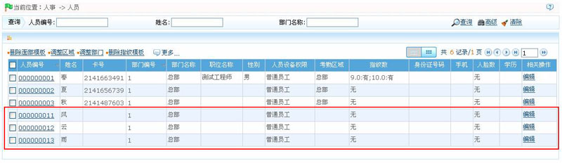
（1）、导入模板需要表头；
（2）、“人员编号”、“姓名”和“部门编号”是必选字段，其他字段是可选的。
人员导入模板如下图所示：
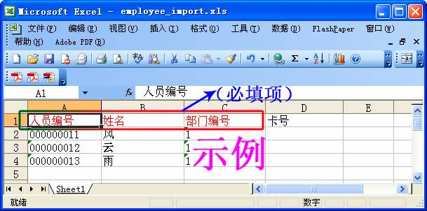
5. 导出
以导出人员列表为例：
（1）、单击【人事】 【人员】
【人员】 【导出】，显示编辑页面：
【导出】，显示编辑页面：
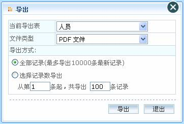
在数据量较大的情况下，建议选择【选择记录数导出】，以加快导出速度，减轻系统负荷。
（2）、选择导出文件的格式：假设选择为EXCEL文件方式导出，点击【导出】则直接显示导出文件。如下图所示：
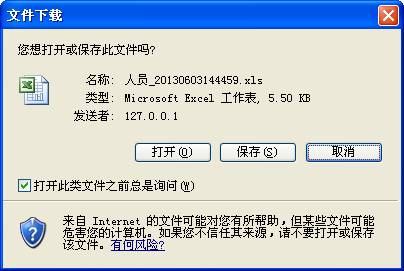
-
单击【打开】，则直接显示文件，用户可单击该文件的文件菜单，在弹出的下拉菜单中选择【另存为】，保存文件（如下图所示）：
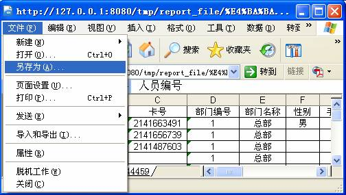
-
单击【保存】，弹出如下图所示的“（文件）另存为”窗口：
在“另存为”窗口中设置路径文件另存为的路径，即可保存该文件。
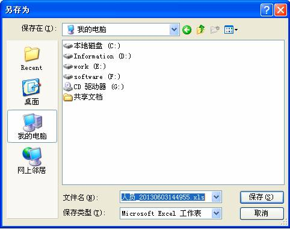
（3）、点击导出窗口中的【退出】，关闭该窗口，并返回人员页面。
（1）、导出表为当前显示的列表，是查询或显示的结果列表；（2）、导出记录最多能够导出10000条最新记录。
6. 查看日志记录
以人员操作日志为例：
单击【人事】 【人员】
【人员】 【日志记录】，弹出如下图所示的日志记录窗口：
【日志记录】，弹出如下图所示的日志记录窗口：
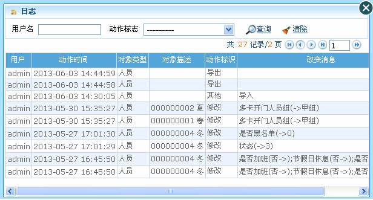
（1）、日志记录只显示当前操作模块中的操作日志；（2）、某些操作菜单下的日志记录需要进入编辑界面才能看到。
7. 查询功能
已查询基本资料的“省份”信息为例（单击【人事】 【基本资料】
【基本资料】 【省份】，进入省份页面）：
【省份】，进入省份页面）：
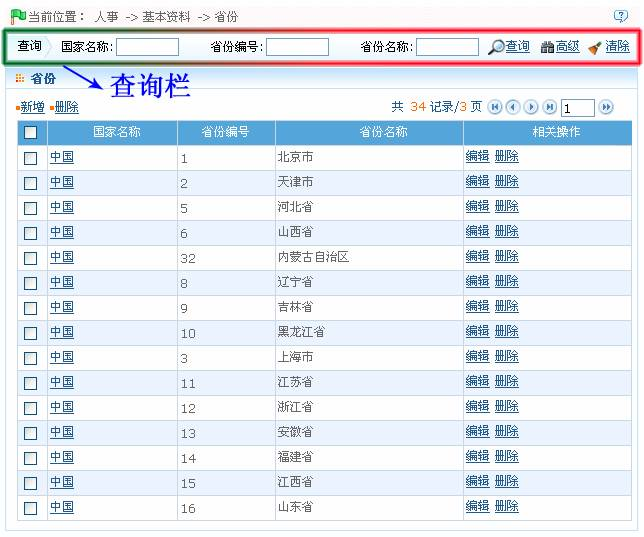
-
 模糊查询
模糊查询
在相应的查询字段（如“国家名称”、“省份编号”或“省份名称”）内输入查询条件，点击【查询】，则下方数据区显示查询结果：
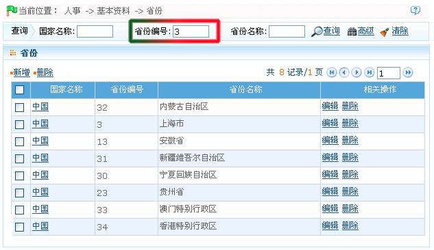
-
高级查询
点击【高级】按钮“”，弹出高级查询窗口：
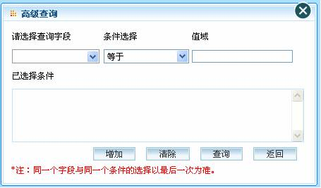
（1）、在【请选择查询字段】的下拉菜单中，选择查询字段；
（2）、在【条件选项】中选择：等于空值、含有、满足任意一个、等于等选项；
（3）、在值域中输入查询条件；
（4）、点击【增加】可以将查询条件显示在【已选择条件】下的列表中，查询条件可多选，但同一个字段与同一个条件只能选择一次；
例如：设置高级查询条件如下：
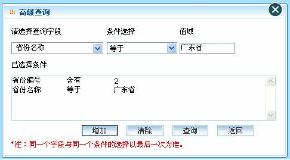
点击【查询】，在返回列表中显示查询结果。
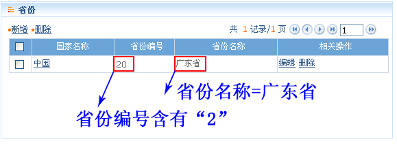
系统中的各个操作菜单下的查询功能基本类似，区别在于查询字段的设置不同，用户按提示输入即可。
8. 选择日期与时间
（以新增请假页面的设置“开始时间”为例）
（1）、单击【考勤】 【请假】
【请假】 【新增请假】，进入新增请假页面。
【新增请假】，进入新增请假页面。
（2）、单击开始时间后的设置框，弹出如下图所示的“日期与时间设置”框：
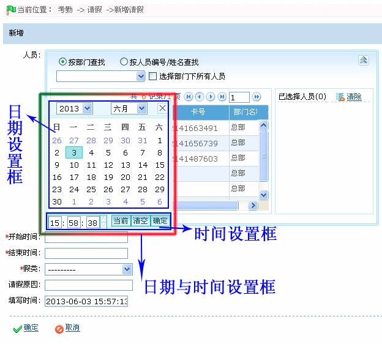
（3）、参见附录1 常用操作中的2. 选择日期和3. 选择时间，选择日期与时间。